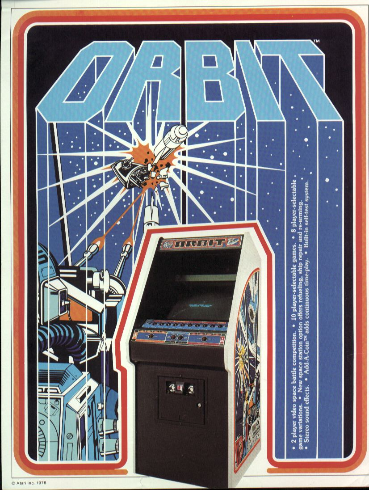
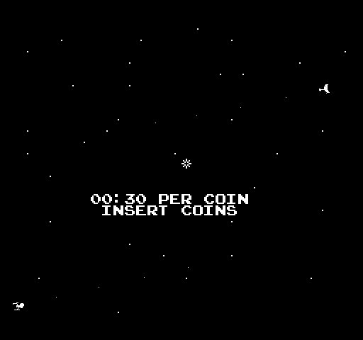
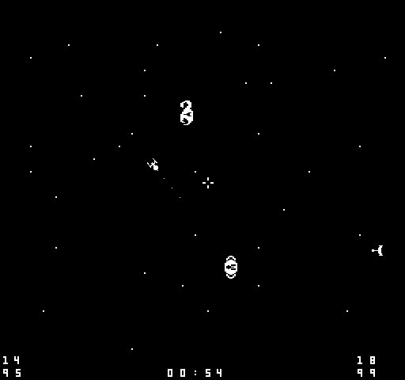

 On Orbit, I was basically asked to knock off Space War in RASTER for the European market in just 6 to 8 weeks, so it was done quickly, and there are small mistakes. I should have made the shots bigger for example, and the space stations could have had better graphics. But for a raster version of a vector game in those days, I think we hit it fairly well. There was 2 versions, a large upright cabinet (that may never have been shipped) and the smaller one with the long row of buttons. We did a very advanced version in the larger cabinet that had an electronic touch pad and lots of LEDs to indicate which options were selected, with a different type of buttons from the small cabinet. It was a very cool touch pad but all the same functions were there, just in a small space. It was a large cabinet with the touch pad over the monitor. The stereo sound was cool because it placed the sound where the objects were on the screen. I love little things like that, and given that the sounds were simple, it was easy to implement. I also changed the option buttons to always work because I hated that in Space War, once you picked the game and options, you were stuck with them for the entire game. If you bought and were playing a 15 minute game, it was a long time to realize you should not have picked negative gravity! Also, I needed to add something to the game to make it different (in addition to the switchable options), so the idea of getting new fuel, shots, and repairs from Space Stations seemed like a cool idea at the time. Too bad it did not work as well as I thought it would. That is why they are an option.) The last interesting note on Orbit was that the space stations actually DO orbit the sun, they are not on tracks. I give them an initial hit of velocity at the start of each wave and the gravity routines do the rest (they ignore negative gravity, because the first time you selected it, they would fly off the screen.) To test the gravity routines, on the bench I put the space stations into orbit around the sun, and just let it run for days. Several days later, they were still in orbit, but degraded a bit and a bit more elliptical. They finally lost orbit a few days later. Not that I needed to do this, I could have put them on tracks, but I wanted my 8 bit gravity math to work as well as possible all the other time. |

  |
{kind=link}
{kind=link}
{kind=link}